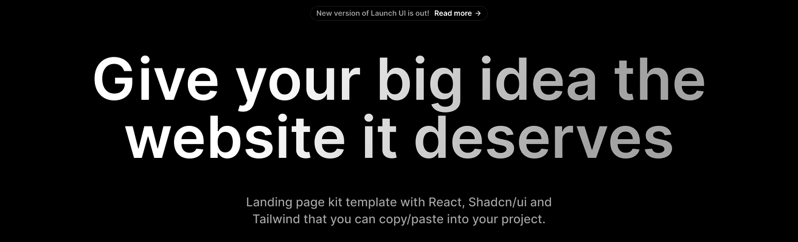
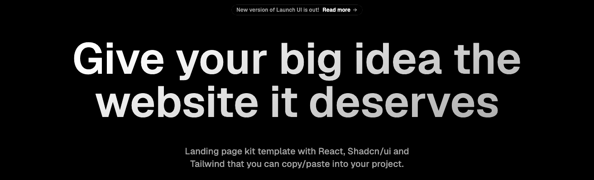
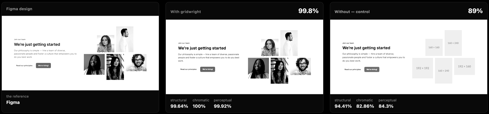

Claude Code plugin
It devours a Figma page and returns it built: measured against the design, every piece filed where your codebase keeps it.
98.54%
Fidelity at 1440px, a whole landing page.
12 sections, one command.
Luciano Balbiano01 / 09
01 — The problem
The obvious move is a long prompt that tells an agent how to build a layout. I tried it. An earlier repo had a five-phase workflow written in prose, and the agent skipped the analysis every time the request looked simple.
So the workflow stopped being text.
Gridwright02 / 09
02 — The method
gw next --json → do exactly that stage
→ gw done → gw next --json → …
The workflow is a state machine on disk, and a CLI enforces it.
| Code does this | The model does this |
|---|---|
| Pull the node, the assets and the reference | Write the component the way this repo writes them |
| Distill the tree into an IR | Name things, decide the prop API |
| Match and classify tokens | Name the new tokens |
| Index existing components | Decide what to reuse |
| Render, measure, diff | Read the diff and fix it |
If it can be checked with an assert, the model doesn't do it.
Gridwright03 / 09
03 — Design against render


Same band. The headline is in the wrong typeface: see 07.
Gridwright04 / 09
04 — A whole page
gw build --view takes each child of the page as a section, runs one sub-agent per section in parallel, and composes the page.
| Section | Score |
|---|---|
| NavbarDefault layout | 95.70 |
| HeroDefault | 91.73 |
| Logos | 85.81 |
| BentoGrid2x2 * | 95.43 |
| ItemsDefault | 98.23 |
| FeatureRising | 88.87 |
| Section | Score |
|---|---|
| TabsDefault | 95.32 |
| Testimonials | 97.28 |
| PricingDefault | 97.78 |
| FAQDefault | 100.00 |
| CTA | 98.81 |
| Footer layout | 97.23 |
Composed page: 98.54% · structural 99.47 · chromatic 100 · perceptual 95.22
* Rejected by distill first, built on its own later. See 07.
Gridwright05 / 09
05 — Tokens first
Resolved before a line of the component is written. The new ones are asked once, for the whole page.
exact — already in the system, used as is
near — within ΔE 1 or a couple of pixels, the system's value wins
new — needs a name and a decision
Against 38 project tokens + 513 from Tailwind's theme
Otherwise the model writes bg-[#1a1a1a] and someone refactors.
Gridwright06 / 09
06 — Same agent, without it

One section of Untitled UI, built twice from the same commit, in two clones that never saw each other. Same prompt, same ruler. One arm had Gridwright.
The control laid the mosaic out with position: absolute.
It got the layout right, 94% structural. It lost on placeholder photos and an approximate brand colour, a minute's fix each. position: absolute isn't: it breaks at the first width the design wasn't drawn for.
Gridwright07 / 09
07 — What broke
The builds came out in the project's default font instead of Inter, and the score didn't notice: the perceptual diff masks text. Now gw build warns when the project doesn't load a typeface from the design. It doesn't substitute and it doesn't install.
Distill rejected one Launch UI section: layers in absolute position, no auto-layout, nothing to extract. The page went on with the other eleven, and that rejection surfaced a bug, the view's registration stopped at the skipped section. Fixed, then the section was built on its own.
This frame does not use auto-layout, so there is no layout to infer. A better prompt will not fix this: it gets fixed in Figma.
Gridwright08 / 09
08 — Where it stands
Every score here is at the width the design was drawn at. At 375 and 768 the same page gives 63% and 65%: those widths have no frame to measure against. No fix yet.
Open source, MIT.
Link in the first comment.
Luciano Balbiano09 / 09